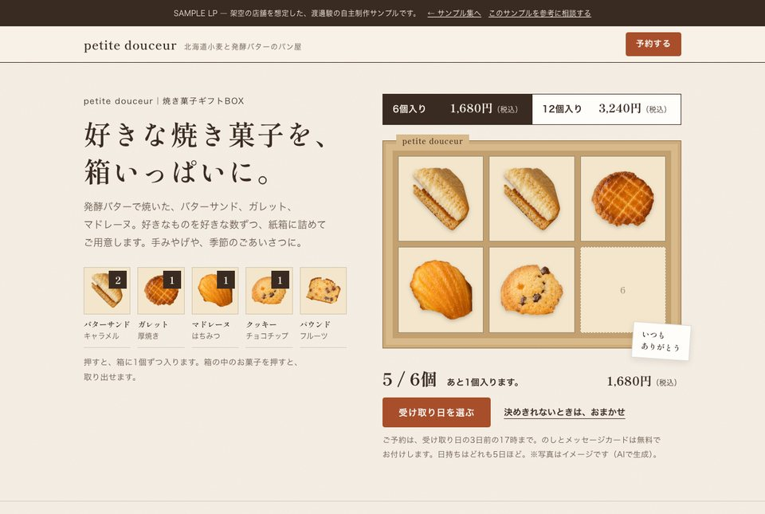

← HOME
LANDING PAGE ／ LP制作
伝わるLPを、言葉と構成から。
商品やサービスをひとつに絞り、魅力が届く順番で構成と原稿を組み立てて、ページにします。
料金の目安（税込・お見積もり無料）一式（構成・文章・デザイン・制作）：50,000円〜100,000円前後
文章だけ：15,000円〜30,000円前後 料金の目安と対応範囲
サンプルはすべて、架空のお店・サービスを想定した自主制作です。お客様の声・料金・事例も架空です。
MORE
どのLPも、商品やサービスをひとつに絞り、「悩みへの共感 → 中身の説明 → 安心できる材料 → 申し込み」の流れで組み立てています。ご依頼の際は、「このLPの雰囲気で」とお伝えください。
※お客様の声・料金・事例なども含め、すべて架空です。うち4つは、HPのサンプルと同じお店を想定しています。
PROMISE
お引き受けしたら、この4つを守ります。
同業のページを、先に調べます
同じ商品やサービスを扱うLPを調べ、伝える順番と、載せる材料を決めてから作り始めます。
作る前に、完成の条件を決めます
今回作るもの、作らないもの、何ができたら完成かを1枚にまとめ、ご確認いただいてから作り始めます。文章もデザインの前に固めるので、後から大きく作り直すことを防げます。
納品のときに、確認の記録をお渡しします
スマホとパソコンでの見え方、ボタンや入力欄の動き、Googleの計測ツールで測った表示の速さを確かめ、結果を数字で書きます。確かめられなかったことも、そのまま書きます。
24時間以内に返信します
ご連絡には24時間以内にお返事します。本業があるため、平日の日中のご連絡には、夜にお返事することがあります。
PRICE
料金は、ご相談のうえお見積もりします。
目安は、構成・文章・デザイン・ページ制作まで一式で50,000円〜100,000円前後、文章だけのご依頼で15,000円〜30,000円前後（税込）です。内容をうかがってから、無料でお見積もりします。いまは、実績としてご紹介させていただけるモニターを先着3名様まで募集しています（料金はご相談ください）。
> 料金の目安と対応範囲を見るFLOW
ご相談から公開まで、6つのステップです。
ご相談
フォームかクラウドワークスのメッセージで、商品・サービスと、LPの目的（予約・申し込み・問い合わせなど）をお知らせください。
ヒアリング・お見積もり
誰に向けたページか、商品の強み、参考にしたいサンプルの雰囲気をうかがい、お見積もりと納期をご提示します。何ができたら完成かも、ここで一緒に決めます。
構成と文章の確認
ページの流れ（見出しの順番）と文章をお見せします。デザインに入る前に、ここで内容を固めます。
デザイン・制作
選んでいただいた雰囲気で、ページを作ります。スマホでの見え方も、同時に作ります。
確認・修正
実際のページをURLでご確認いただき、ご指摘をもとに直します（修正は標準で1〜3回です。増やしたい場合はご相談ください）。
納品・公開
ページのファイル一式をお渡しします。ご希望があれば、ご用意いただいたサーバーに載せて公開するところまで行います。確かめた端末や表示の速さをまとめた確認の記録も、一緒にお渡しします。公開後1か月以内の文字・画像の差し替えは無料です。
1ページ一式の場合、ヒアリングから納品までおよそ14営業日が目安です（内容によって変わります）。
SEO
検索で見つけてもらうための、基本の設定をして納品します。
LPは、検索よりも広告やSNSから来る人が中心になりやすいページです。そのため、検索の設定に加えて、表示の速さと、広告の言葉とページの言葉がそろっていることを大事にしています。
検索結果に出る文章
ページごとに、タイトルと説明文を書き分けます。検索結果で、中身が伝わる要約にします。
探される言葉で、見出しを
SEO記事を書いている経験から、「どんな言葉で探されるか」を調べて、見出しと本文に入れます。
見出しと写真の整理
大見出しは1ページに1つ。見出しの順番を整え、写真には内容が分かる説明（代替テキスト）を付けます。
スマホと表示の速さ
スマホで読みやすい作りにし、写真は軽くして、表示を速くします。
SNSでシェアされたとき
シェアされたときに出る見出し・説明・画像を設定します。
広告の言葉と、ページをそろえる
広告やSNSで見た言葉が、ページを開いてすぐに目に入るように作ります。来た人が「思っていたページと違う」と感じないためです。
サンプルで、実際に測りました（2026年10月24日）
Googleの計測ツール「Lighthouse」で、公開中のページを、スマホでの表示を想定して3回ずつ測りました（点数は3回の真ん中の値）。対象はLPサンプル6本です。
検索（SEO）の項目は、サンプルを検索結果に出さない設定にしているぶんだけ減点になり、それ以外の確認項目はすべて通っています。点数は計測する環境や日によって多少変わります。
Googleの計測ツール「Lighthouse」で、公開中のページを、スマホでの表示を想定して3回ずつ測りました（点数は3回の真ん中の値）。対象はLPサンプル6本です。
| 表示の速さ | 96〜100点 |
| 見やすさ・使いやすさ（アクセシビリティ） | すべて100点 |
| 安全で正しい作り（ベストプラクティス） | すべて100点 |
お約束できないこと
検索の順位は、競合するサイトや、サイトを運営している期間、更新の頻度などでも変わります。そのため、上位表示のお約束はしていません。
検索の順位は、競合するサイトや、サイトを運営している期間、更新の頻度などでも変わります。そのため、上位表示のお約束はしていません。
※サンプルは架空のお店なので、検索結果には出さない設定（noindex）にしています。それ以外の設定は、各ページのソースで確かめられます。
FAQ
ご依頼の前に、よくいただく質問。
写真がありません。
素材サイトの写真を使って作れます。お店や商品のお写真があれば、雰囲気がいちばん伝わります。AIで作った画像を使う場合は、事前にお伝えしてご相談します。
サーバーやドメインが、よく分かりません。
ページを置く場所（サーバー）と、ページの住所（ドメイン）は、お客様の名義でご用意いただきます。選び方や取り方は、ご説明します。費用はお客様のご負担です。
公開したあと、自分で文章を直せますか？
HTMLで作るため、ご自身での文字の差し替えには少しコツが要ります。公開後1か月以内の差し替えは無料、その後は1回3,000円〜でお受けします。ご自身で更新したい場合は、STUDIO・WordPressでの制作をご相談ください。
広告の出稿も、お願いできますか？
広告の出稿・運用はお受けしていません。広告の文とページの言葉をそろえるお手伝いはできます。
支払いはいつですか？
クラウドワークス経由のご依頼は、クラウドワークスの仮払いの仕組みに沿って進めます。直接のご依頼は、お見積もりのときにご相談して決めます。
AIは使っていますか？
構成の整理や下書き、ページを作るコードの作成で、補助として使うことがあります。文章とデザインの仕上げ、表示の確認は、必ず自分の目で行います。
検索で上位に表示されますか？
上位表示のお約束はしていません。検索で見つけてもらうための基本の設定をして納品します（SEOの欄をご覧ください）。
CONTACT
ご相談は、こちらからどうぞ。「こんなこと頼めるかな」という段階でも大丈夫です。
> CONTACT